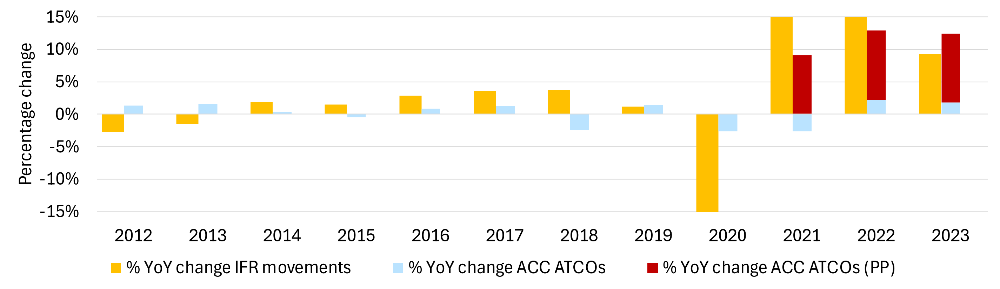

Where do shortages become visible?
The retrospective assessment uses observed delay attribution and staffing data to locate workforce pressures. Capacity and staffing delay codes provide evidence of constraints, with limitations on what can be inferred about individual causes.
Identifying where workforce pressures appear
The retrospective analysis examines staffing-related capacity shortages over 2018–2025, largely excluding 2020 and 2021 because COVID-19 disrupted traffic. It uses delay attribution and workforce trends to identify where pressures became visible.
The analysis uses en route ATFM delays attributed to C — ATC capacity and S — ATC staffing. For each ANSP it calculates both the share of local all-cause delays and the contribution to network all-cause delays. These codes do not include industrial action.
The five ANSPs with the highest average contributions to network C+S delay minutes were selected for closer analysis.
- DSNA
- DFS
- ENAIRE
- HASP
- HungaroControl.
Reading traffic and delay signals
The EUROCONTROL delay datasets provide ample information on ATFM delays from 2011 to recent months. These datasets include not only daily delay data by delay reason but also the number of IFR movements for each entity. While the period covered by the delay data is significantly shorter than that of ATCO numbers, it still provides 15 years of data, with the 2011 to 2023 period overlapping, allowing for solid contextual analysis.
We used en route ATFM delays to examine the context of the evolution of ATCO numbers, as these were the most disruptive during the period. When analysing aggregate delay data, it is crucial to define the geographical scope carefully, since the number of IFR movements must be measured within that scope; these figures cannot simply be aggregated. To obtain the longest possible dataset while keeping the geographical scope unchanged, delay and traffic data was analysed for the “SES Area (RP1)” entity in the dataset. While this excludes some Member States that were not part of the SES area at the start of RP1, it still provides a good overview of the network’s general trends. This does not prejudice the analysis of ANSPs, as data is available for each entity in the dataset (but not for the current SES area for the entire period).
The overall trend over the period is shown in the chart. Early in the period, both traffic demand and en route ATFM delays decreased, then increased steadily until 2017. In 2018 and 2019, delays almost doubled, while traffic continued to increase only at or below the previous pace. During the COVID-affected years, traffic collapsed and delays were at an all-time low. However, when traffic began to recover in 2022, en route ATFM delays exploded, reaching the highest level over the 15-year period in 2024, even as traffic remained below pre-COVID levels. It must be noted, though, that traffic recovery was not uniform across the network: Several ANSPs experienced double-digit increases in traffic demand, while others remained 5-30% below the 2019 level due to the impact of Russia’s war of aggression against Ukraine.

ATFM delays occur when the experts in the Flow Management Position (FMP) of an ATS unit decide to introduce an ATFM regulation to limit the declared airspace capacity (typically for a sector or an airspace block), thereby reducing the inflow of flights and ensuring that the ATCOs can safely manage traffic. When an ATFM regulation is introduced, the FMPs are required to note the reason behind it. While there are typically multiple reasons for introducing an ATFM regulation, FMPs must determine and indicate the dominant cause for each case. The codes designated for ATFM regulations are then carried over to ATFM delays, enabling delays to be grouped under the various codes and code groups (hereinafter referred to as delay codes).
For the purpose of the study, delay codes “C – ATC capacity” and “S – ATC staffing” are the most relevant categories. Code C is used when the ATS unit does not have sufficient capacity to cope with the traffic demand, either due to the general lack of ATCOs or otherwise. Code S is used when the ATS unit is unable to staff enough working positions at the time required to accommodate traffic demand due to the unavailability of ATCO staff. This may be due to staff shortages, limitations in the rostering scheme, poor planning or unexpected shifts in traffic. The definitions of delay reasons and delay codes are not clear-cut, and there is overlap between codes C and S. We use a combination of these codes to examine delays related to ATCO staffing issues. the chart shows the evolution of en route ATFM delays under these two delay codes over the same period. The overall trends align with the overall picture. The share of ATCO-related delays varies between 32% and 80% (in 2020 and in 2011, respectively) and is around 50-60% during most of the years in the period.

Based on the values observed during the period, it is difficult to establish a clear correlation between traffic demand and average en route ATFM delay per flight attributable to ATCO staffing issues (as well as to delays for all reasons). While the trends appear to be moving in the same general direction, the peaks in delays in 2018, 2019 and 2024 cannot be explained by traffic growth alone. It could be argued that the relationship between traffic demand and ATFM delays is not linear, but exponential (i.e. delays increase exponentially when the airspace becomes saturated), but even that does not seem to be justified by the figures if we look at the changes between 2018 and 2019 or between 2022 and 2024.
When we add the evolution of the number of ACC ATCOs in OPS to the picture, it becomes apparent that ATCO numbers are more strongly correlated with the delay figures than traffic growth. As the number of ACC ATCOs in OPS increases year-on-year, delays under codes C and S tend to decrease, as expected, except for the 2015-2017 period, when strong traffic growth apparently outpaced the increase in ATCO numbers. The combination of decreasing ATCO numbers and growing traffic explains the peak in the delays in 2018, while the subsequent increase in staffing in 2019 at least partially explains why delays did not increase further despite the growth in traffic. The same tendency is apparent between 2022 and 2023. the chart shows the combined picture, together with the latest information on the planned number of ACC ATCOs in OPS from the RP4 performance plans, for further context.

Outside the COVID-19 outlier years, traffic demand and controller numbers often moved independently. Annual changes rarely aligned in both direction and magnitude. Realising the planned workforce figures would still have left controller growth below traffic growth in most years.

The RP3 comparison shows a growing difference between planned and actual ACC staffing from 2021 to 2024. Controller numbers fell in 2023 despite traffic recovery and plans for growth. The actual workforce remained below its 2022 level in 2024, with a shortfall of around 500 controllers against the plan. Reporting differences mean these figures cannot be directly equated with the ACE series.